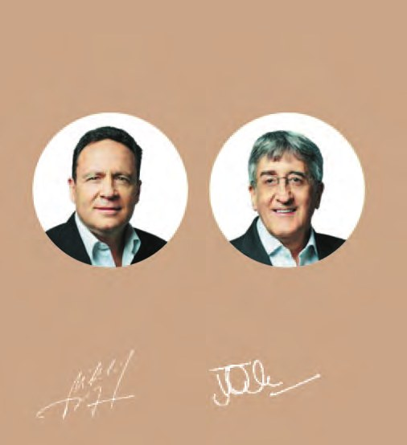
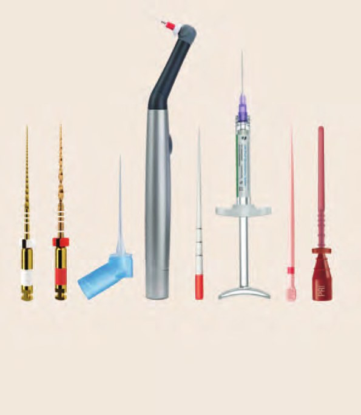
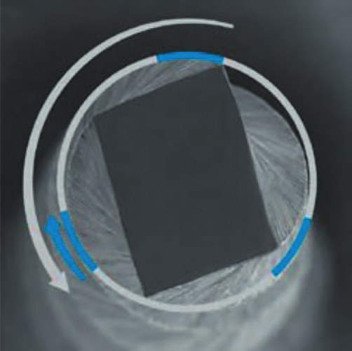
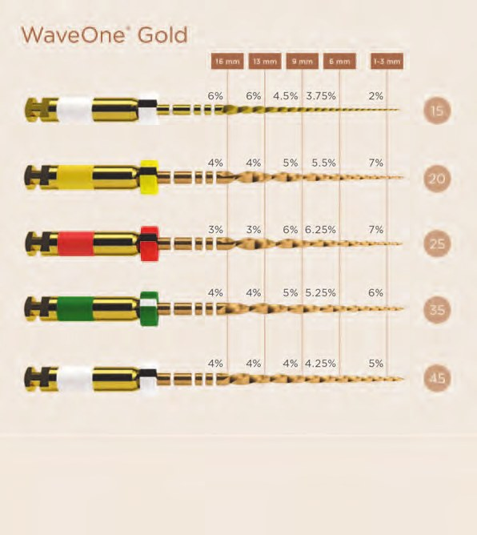
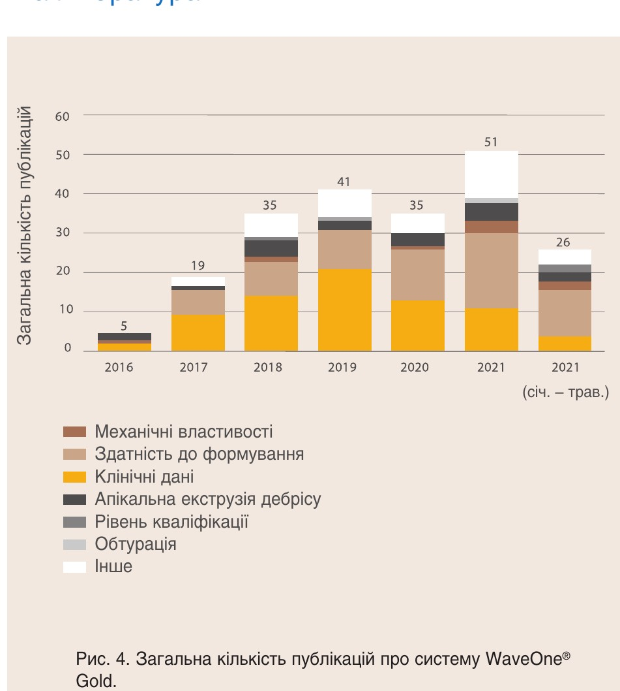
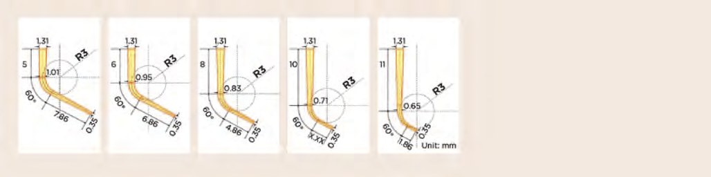
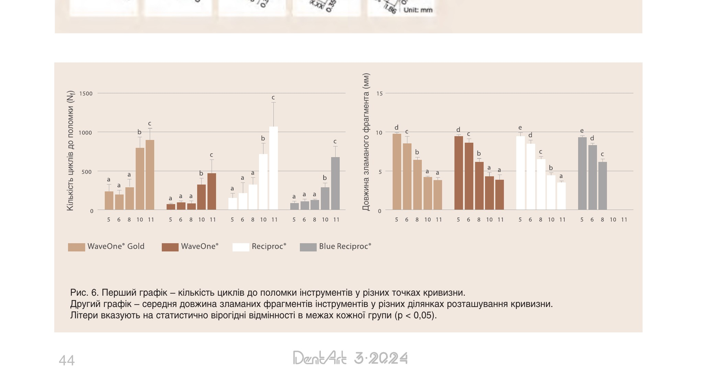
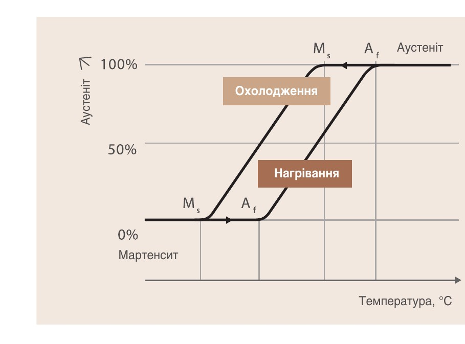

Матеріали Дентсплай Сірона · журнал «ДентАрт» 2024 №3
WaveOne® Gold – ендодонтична система нового покоління
WAVEONE® GOLD SCIENTIFIC MANUAL
Науковий посібник Dentsply Sirona / Dentsply Maillefer про ендодонтичну систему WaveOne® Gold: механізм реципрокного руху, металургія, огляд ключових наукових досліджень (стійкість до втоми, рівень необхідної кваліфікації).
Більшість комерційно доступних інструментів з нікель-титану (NiTi) розроблені для використання в режимі безперервного обертання. Хоча переваги цих інструментів добре задокументовані, проблеми циклічної втоми та обертального моменту (торку), особливо в довгих, вузьких і більш зігнутих каналах, залишаються предметом занепокоєння.1–3
Як альтернатива обертальному руху, реципрокний рух упродовж багатьох років використовувався для ендодонтичних інструментів як альтернативний режим ротаційних рухів з чергуванням рівних кутів обертання вперед і назад, при якому жоден з інструментів не завершує повного оберту.
У 2008 році було застосовано новий реципрокний рух, який складався з чотирьох циклів нерівномірних двоспрямованих кутів, що завершували повне обертання вперед на 360°. Це показало, що лише один файл може почати і повністю завершити підготовку каналу до ідеальної форми.4 Ця техніка чітко продемонструвала зниження як циклічної втоми, так і торсійного навантаження, що запобігає поломці інструментів.5
Це привело до запуску у 2011 році системи WaveOne® (Dentsply Maillefer), однієї з перших «однофайлових» реципрокних систем зі спеціальними та спеціалізованими механізмами для генерування двоспрямованих та нерівномірних кутів руху.6 Концепція була прийнята багатьма стоматологами, які прагнули перейти до автоматизованого формування каналів після багатьох років невдалих спроб з використанням мануальних технік, і цінувалася з точки зору безпеки, економії часу та коштів.
Як результат клінічних відгуків, висновків наукової літератури та досягнень у металургії інструментів, четверо з клінічних експертів-консультантів, котрі з самого початку брали участь у розробці WaveOne®, – доктор Серджіо Каттлер (США), доктор Вільгельм Перто (Франція), професор Кліффорд Раддл (США) і доктор Джуліан Веббер (Велика Британія) – співпрацювали з командою досліджень і розробок Dentsply Maillefer у Балезі, Швейцарія, щоб покращити ріжучу ефективність і механічні властивості файла та надати новий рівень упевненості багатьом клініцистам, які все ще обережно ставляться до автоматизованих технік формування каналів.
WaveOne® Gold вийшов на ринок у 2015 році як нове покоління 4-ох одноразових реципрокних файлів: Small, Primary, Medium і Large, які забезпечують неперевершену безпеку, легкість у використанні та надзвичайну простоту.
Прогресивно конусний і покращений з точки зору металургії реципрокний WaveOne® Gold Glider (Dentsply Sirona) був представлений у 2017 році для безпечнішого методу створення повністю конусної килимової доріжки в довжину порівняно з фіксованим конусним файлом із нержавіючої сталі розміром 15, що ще більше зменшує загальний час формування7 та надає перевагу у вигляді зекономленого часу, який буде використаний для покращення та активації іригантів за допомогою звукових і ультразвукових пристроїв, підвищуючи їх ефективність.8
Зі своїм характерним «золотим» покриттям та запатентованим поперечним перерізом WaveOne® Gold має значну міцність і гнучкість завдяки новому термічному процесу обробки. Визначивши відповідну точку переходу між аустенітом і мартенситом, був розроблений клінічно більш оптимальний і вдосконалений метал, ніж стандартний NiTi, і це мало позитивний вплив на властивості інструмента.9,10
Інструменти, розроблені з реверсивною ріжучою спіраллю, захоплюють і ріжуть дентин у напрямку проти годинникової стрілки (ПГС), а потім вивільняються у напрямку за годинниковою стрілкою (ЗГС) до того, як інструмент встигне «заклинити» (застрягнути в каналі). Чистий зворотний рух інструмента становить 120°, завершуючи повний оберт на 360° після трьох циклів реципрокного руху.
Оскільки кут ПГС є меншим, ніж еластичний ліміт кожного файла, проблема торсійного моменту значно зменшується.
Нерівномірні кути за ЗГС та ПГС також дозволяють файлу легше просуватися до бажаної робочої довжини без використання надмірного і потенційно небезпечного внутрішнього тиску4 та стратегічно покращують виведення дебрісу із каналу.11
Файли не можна стерилізувати і використовувати повторно. Виключення повторного використання зменшує ймовірність поломки через втому матеріалу та торсійного моменту.12 Одноразове використання усуває будь-які занепокоєння щодо перехресної контамінації,13 а усунення вартості дезінфекції, очищення та стерилізації знижує загальні витрати. Оскільки один ротаційний файл виконує ту саму роботу, яка зазвичай вимагала б використання трьох чи більше ротаційних файлів з нікель-титану, логічно, що одноразове використання є найкращим рішенням для зниження частоти поломок файлів.

Опис системи WaveOne® Gold з акцентом на файли
Система WaveOne® Gold включає інструмент для створення килимової доріжки (Glide Path) і чотири інструменти для формування (Primary, Small, Medium, Large), а також кілька допоміжних компонентів: ін'єкційну голку Dentsply Sirona, EndoActivator®, абсорбційні паперові піни, силер AH Plus® Bioceramic, відповідні гутаперчеві піни та обтураційні системи на основі носіїв гутаперчі GuttaCore® (рис. 1).

На відміну від ротаційних систем, інструменти WaveOne® Gold працюють за допомогою реципрокного руху. Цей рух здійснюється завдяки реципрокним ендомоторам Dentsply Sirona та VDW.
Під час цього руху інструмент зрізає дентин у напрямку проти годинникової стрілки, а потім відкручується в напрямку за годинниковою стрілкою (рис. 2). Відкручення відбувається до того, як надмірний торсійний стрес передається на металевий сплав, що запобігає заклинюванню інструмента (конічний замок) у кореневому каналі і таким чином має переваги порівняно із системами безперервного обертання.

Інструменти WaveOne® Gold мають запатентовану геометрію (див. рис. 2 для ілюстрації перерізу інструментів у вигляді паралелограма), максимальний діаметр заглиблення між ріжучими гранями 1,2 мм в робочій частині та нову розроблену термообробку. Кожен інструмент має руків'я довжиною 11 мм для полегшення доступу до молярів.
Заглиблюючись більш детально, Glider (розмір 15.02v, де v (variable) позначає змінний конус) з прогресивним конусом і поперечним перерізом у вигляді паралелограма (рис. 3) використовується для створення проходу до термінальної частини каналу. Інструменти для формування WaveOne® доступні в чотирьох розмірах (Primary 25.07v, Small 20.07v, Medium 35.06v, Large 45.05v) і трьох робочих довжинах (21, 25 і 31 мм). Ці інструменти мають переріз у вигляді паралелограма зі змінним конусом і один або два ріжучі краї, залежно від місця розташування на файлі.
Усі інструменти постачаються стерильними та мають кільце з полімера ABS на руків'ї, відоме як «кільце проти повторного використання». Це кільце розширюється під час автоклавування, запобігаючи повторному вставлянню інструмента в ендонаконечник, що знижує ризик перехресної контамінації. Такий дизайн забезпечує максимальну ріжучу ефективність і підвищує безпеку використання за рахунок поліпшення стійкості до циклічної втоми.

Інструменти WaveOne® Gold виготовляються зі стандартних NiTi дротів, які обробляються за допомогою мікрофрезерування і на кінцевому етапі підлягають спеціальній «золотій» термічній обробці. Ця термічна обробка провадиться для того, щоб інструменти перебували в мартенситній фазі під час клінічного використання (тобто при температурі від 35° до 37°C), що дає такі клінічні переваги:
- попередньо вигнуті інструменти, що може бути корисно при обходженні виступів;
- інструменти з підвищеною стійкістю до втоми та гнучкістю для оптимізованої роботи зі складними вигинами та анатомією кореневих каналів у порівнянні з іншими NiTi інструментами, які здебільшого перебувають у більш жорсткій аустенітній фазі під час клінічного використання.14
Для отримання додаткової інформації про термомеханічно оброблені сплави NiTi можна звернутися до огляду, опублікованого Zupanc та ін.,14 в якому підкреслюються їх властивості, різниця між аустенітною та мартенситною фазою, а також переваги обох фаз з клінічної точки зору.
Основна література
Система WaveOne® Gold була запущена в усьому світі у 2015 році, а інструмент WaveOne® Gold Glider – пізніше, у 2017-ому.
На сьогодні вже опубліковано понад 200 рецензованих наукових статей про цю ендодонтичну систему, що охоплюють різні теми, як показано на рис. 4, що робить WaveOne® Gold однією з найдетальніше досліджених NiTi систем у галузі ендодонтії.
Цей компендіум подає огляд основних опублікованих досліджень про систему WaveOne® Gold з акцентом на аспекти ефективності та безпеки, визначені як стійкість до втоми (механічні властивості), рівень необхідної кваліфікації, здатність до формування, якість обтурації та клінічні дані. Кожен висновок ґрунтується на фактах, отриманих з оригінальної наукової статті. Для підвищення наукової достовірності у компендіум були включені лише дослідження in vitro, що мали розмір вибірки ≥10 на групу. Якщо були визначені інші критерії включення, вони вказані на рис. 4.

1. Стійкість до втоми (механічні властивості)
Включає всі дослідження, проведені з використанням клінічно релевантних параметрів (37°C, наявність рідини), з комплексним аналізом ефективності за допомогою таких методів дослідження: НЦФ, СЕМ та ДСК.
2. Рівень кваліфікації
У цьому розділі розглядається допомога стоматологам у виборі найбільш підхожої послідовності інструментів відповідно до їх рівня кваліфікації та досвіду.
3. Здатність до формування
Включає всі дослідження за допомогою мікроКТ на видалених зубах відповідно до інструкцій з використання WaveOne® Gold.
4. Якість обтурації
Включає одну статтю, що досліджує якість обтурації носіїв гупаперчі WaveOne® Gold в овальних каналах відповідно до інструкцій з використання WaveOne® Gold.
5. Клінічні результати
Включає всі доступні рецензовані клінічні дослідження про WaveOne® Gold та клінічні випадки.
Апікальна екструзія дебрісу
Хоча деякі дослідження також фокусуються на дослідженнях in vitro апікальної екструзії дебрісу, вони були виключені з цього посібника, оскільки їх моделі дослідження в основному застарілі і не враховують біологічні обставини, за яких відбувається екструзія.15 Крім того, доступні клінічні дослідження WaveOne® Gold, що фокусуються на післяопераційному болю (що виникає внаслідок апікальної екструзії дебрісу), розглядаються в розділі «Клінічні результати».
Важливо підкреслити, що висновки, зроблені на основі виключених досліджень за всіма темами, не виявили жодних компромісів у продуктивності чи безпеці при використанні WaveOne® Gold відповідно до інструкцій з використання.
1. Стійкість до втоми
Стійкість до втоми залишається основним занепокоєнням серед стоматологів, хоча інструменти з NiTi можуть витримувати кілька сотень циклів вигину до їх поломки, викликаної втомою металу.16 Крім того, при реципрокному русі очікується, що навантаження на еластичну межу інструментів буде меншим і буде створено різні точки стресу на інструментах у порівнянні з однією точкою стресу в інструментів з постійним обертанням. Таким чином, очікується, що реципрокний рух сприятиме більшій стійкості до циклічної втоми порівняно з постійним обертальним рухом.17
Стійкість до циклічної втоми реципрокних інструментів була визначена при температурі тіла й аналізі фазових перетворень.18
Стійкість до циклічної втоми реципрокних інструментів була визначена при температурі тіла й аналізі фазових перетворень.18
Автори: Scott R., Arias A., Macorra J. C., Govindjee S., Peters O. A.
Опубліковано в Australian Endodontic Journal, 2019. Vol. 45. Issue 3. p. 400–406.
Метою цього дослідження було порівняти стійкість до втоми трьох реципрокних інструментів: WaveOne® Primary, WaveOne® Gold Primary та EdgeFile® X1 (EdgeEndo®).
Було оцінено загалом 60 інструментів (n = 20) у штучному каналі з вигином 60° і радіусом 3 мм, розташованому на відстані 5 мм від кінчика інструментів, у деійонізованій воді при температурі тіла (37+/-1°C). Особливості поломки після тестів на втому були оцінені за допомогою скануючої електронної мікроскопії (СЕМ). Дослідження також включало тестування диференціальної скануючої калориметрії (ДСК) на нових інструментах кожної системи для аналізу їх термічної поведінки: точки початку і кінця трансформації аустеніту (Aп і Aк) та точки початку і кінця трансформації мартенситу (Mп і Mк).
Результати
- WaveOne® Gold був найбільш передбачуваним інструментом, тобто час до поломки становив 199,4 с, показуючи найвище β значення. WaveOne® Gold також виявився значно стійкішим до втоми порівняно з WaveOne® з часом до поломки 157,9 с (див. таблицю 1).
- EdgeFile® X1 був значно стійкішим до циклічної втоми, ніж WaveOne® Gold та WaveOne®, але показав найменшу передбачуваність поведінки стійкості до втоми (див. найменше β значення в таблиці 1, що означає появу неочікуваних ранніх поломок), що пов'язано з дефектами поверхні та/або маси. Зображення СЕМ показали, що поверхня EdgeFile® X1 на місці поломки була найменшою, що пояснює вищу стійкість до циклічної втоми.
- Аналіз ДСК засвідчив, що WaveOne® і WaveOne® Gold на 50 % складаються з мартенситу, тоді як EdgeFile® X1 має менше мартенситної фази при температурі тіла. Отже, стійкість до циклічної втоми трьох оцінених інструментів не була пов'язана з їх мартенситною фазою, а скоріше з їх дизайном і конусністю.
| Інструмент | Середній термін служби (CI 95%) | β (CI 95%) | η (CI 95%) |
|---|---|---|---|
| WaveOne® | 157.9 с (141.8 – 175.9) | 4.8 (3.4 – 6.8) | 172.5 с (156.6 – 190) |
| WaveOne® Gold | 199.4 с (187.4 – 212.3) | 9.1 (6.6 – 12.5) | 210.5 с (199.8 – 221.8) |
| EdgeEndo Reciprocating | 242.9 с (211 – 279.6) | 4.2 (3.1 – 5.7) | 267 с (236.8 – 301.1) |
Вплив розташування кривизни каналу на стійкість до циклічної втоми реципрокних файлів.19
Автори: Sobotkiewicz T., Huang X., Haapasalo M. та інші.
Опубліковано в Clinical Oral Investigations, 2021;25(1):169-177.
У цьому дослідженні in vitro порівнювалася стійкість до втоми 4-х реципрокних NiTi інструментів: файли WaveOne® Primary (WO), WaveOne® Gold Primary (WOG), Reciproc® 25/0.08 (Rec) (VDW, Мюнхен, Німеччина) та Reciproc® Blue 25/0.08 (RecB) (VDW, Мюнхен, Німеччина) у штучних каналах з різним розташуванням кривизни (рис. 5). Використовувалися 50 інструментів для кожної системи (n = 10 на канал з певним розташуванням кривизни), і тести проводилися в сольовому розчині при температурі 37 +/- 2°C. Кількість циклів до поломки була розрахована для кожного інструмента, вимірювалася довжина зламаних інструментів, а також робилися знімки поверхонь зламів за допомогою скануючої електронної мікроскопії (СЕМ). Дослідження також включало тестування диференціальної скануючої калориметрії (ДСК) на нових інструментах кожної системи для аналізу їхньої термічної поведінки: точки початку і кінця трансформації аустеніту (Aп і Aк) та точки початку і кінця трансформації мартенситу (Mп і Mк).

Результати щодо кількості циклів до поломки інструмента
- Усі оцінені інструменти показали нижчу стійкість до втоми в каналах із середньою або корональною кривизною (a, b, c розташування кривизни) порівняно з апікальною кривизною (d, e розташування кривизни) (рис. 6). Це здебільшого пов'язано з більшим діаметром у корональній та середній частинах інструментів, ніж в апікальній зоні (див. розділ 3 для докладніших відомостей про геометрію інструментів WaveOne® Gold).
- WaveOne® Gold і Reciproc® Blue показали кращу стійкість до втоми порівняно з інструментами WaveOne® та Reciproc®.
- Кількість циклів (360°) до поломки інструментів WaveOne® Gold коливалася від приблизно 200 циклів (b розташування кривизни, рис. 6) до понад 900 циклів (e розташування кривизни).

Результати щодо місця поломки інструмента
- Усі інструменти зламалися на/або близько до точки максимальної кривизни для кожного каналу.
- Зображення СЕМ показали поломку інструмента, викликану втомою, з точкою виникнення тріщини, розташованою в зонах концентрації стресу (тобто на ріжучих краях інструмента).
Пояснення та результати щодо фазових перетворень
Для максимально можливої стійкості до втоми Aп та Aк інструментів з NiTi мають бути вищими за клінічну температуру у каналі – 35 +/- 1°C. Таким чином, інструменти перебувають у мартенситній фазі під час лікування, що забезпечує вищу гнучкість і стійкість до втоми порівняно зі станом в аустенітній фазі (див. також у розділі 3 докладніші дані про термомеханічно оброблені сплави NiTi).
У цьому дослідженні середнє значення Aп для WaveOne® Gold становило 35.4°C, для WaveOne® – 26.22°C, для Reciproc® – 26.6°C і для Reciproc® Blue – 30.2°C, що вказує на те, що WaveOne® Gold повністю перебуває у мартенситній фазі під час лікування (тобто має підвищену гнучкість і стійкість до втоми). Дивіться таблицю 2 для докладніших відомостей про точки початку і кінця трансформації аустеніту, Aп та Aк, а також про точки початку і кінця трансформації мартенситу (Mп та Mк) оцінених інструментів. Рис. 7 надає візуалізацію термічної поведінки сплаву NiTi для глибшого розуміння двох підсумованих вище досліджень. Діаграма температурного гістерезису показує температури перетворення.
| Система файлів | Охолодження Ms (°C) | Охолодження Mf (°C) | Нагрівання As (°C) | Нагрівання Af (°C) |
|---|---|---|---|---|
| WaveOne® | 45.10 ± 1.38 | 22.54 ± 1.01 | 26.22 ± 1.82 | 48.70 ± 1.67 |
| WaveOne® Gold | 44.40 ± 0.30 | 26.26 ± 1.00 | 35.36 ± 0.80 | 47.26 ± 1.02 |
| Reciproc® | 44.88 ± 0.64 | 23.72 ± 2.09 | 26.76 ± 1.23 | 51.42 ± 1.62 |
| Reciproc® Blue | 32.55 ± 1.00 | 24.09 ± 1.23 | 30.24 ± 0.22 | 37.08 ± 0.60 |

Основні висновки щодо стійкості до втоми WaveOne® Gold
- Інструменти WaveOne® Gold демонструють дуже передбачувану та постійну стійкість до циклічної втоми, що підкреслює їх надійність, безпечне використання і підвищену стійкість до циклічної втоми порівняно з попередником WaveOne®.
- Інструменти WaveOne® Gold переважно перебувають у мартенситній фазі під час обробки каналів, що сприяє їхній стійкості до втоми (порівняно з інструментом, який не зазнав термообробки).
- Розташування кривизни кореневого каналу може впливати на стійкість інструментів до зламу. Корональні та середні кривизни створюють більше навантаження на інструменти, ніж апікальна кривизна. Це вирішується за допомогою WaveOne® Gold завдяки його термообробці, що сприяє утворенню мартенситної фази. Таким чином, підвищується як гнучкість, так і стійкість до втоми (порівняно з інструментом, який не зазнав термообробки). Нарешті, безпечність використання інструментів WaveOne® Gold була значною мірою підтверджена клінічним дослідженням, яке оцінювало частоту їх поломки (див. розділ 5 «Клінічні результати» для резюме цього дослідження).
2. Рівень необхідної кваліфікації
Підтримка стоматологів у виборі найбільш бажаної послідовності інструментів відповідно до їхнього рівня кваліфікації розглядається в цьому розділі на основі одного нещодавнього наукового дослідження.
Вплив кваліфікації оператора на створення килимової доріжки і підготовку кореневих каналів зі складною анатомією за допомогою ротаційних і реципрокних рухів.21
Автори: Dablanca-Blanco A. B., Arias A., Ginzo-Villamayor M. J., Perez M. C., Castelo-Baz P., Martín-Biedma B.
Опубліковано в Aust Endod J, 2022. Apr;48(1):37–43.
Метою цього дослідження було оцінити вплив підготовки оператора на результат формування кореневого каналу на основі частоти поломки інструментів і часу, потрібного для його підготовки.
Два досвідчені оператори та два недосвідчені оператори провадили підготовку вибраних викривлених кореневих каналів видалених зубів (кут > 30°, радіус < 6 мм) за допомогою ротаційних інструментів (ProGlider™ для створення килимової доріжки і ProTaper® Next, X1 та X2 для формування) та реципрокних інструментів (WaveOne® Gold Glider для створення килимової доріжки і WaveOne® Gold Primary для формування). Досвідчені оператори мали понад десять років досвіду в ендодонтії, тоді як недосвідчені оператори були студентами бакалаврату, які пройшли попереднє навчання з формування 10 каналів кожною оціненою системою. Загалом було протестовано 400 інструментів на 160 кореневих каналах.
Щодо часу, потрібного для створення килимової доріжки та формування (див. таблицю 3), не було виявлено статистично вірогідних відмінностей у часі, необхідному для створення килимової доріжки для досвідчених та недосвідчених операторів, проте всі користувачі витрачали значно більше часу з ProGlider™ порівняно з WaveOne® Gold Glider. Недосвідчені оператори витрачали значно більше часу на формування з ProTaper® Next, ніж досвідчені, але час з WaveOne® Gold був однаковим для досвідчених і недосвідчених операторів.
Щодо частоти поломки інструментів (див. таблицю 3), то 3 інструменти ProGlider™ зламалися під час створення килимової доріжки недосвідченими операторами, тоді як жоден з інструментів WaveOne® Glider не зламався у цьому дослідженні ані у досвідчених, ані в недосвідчених стоматологів. Під час етапу формування недосвідчені оператори зламали 4 інструменти ProTaper® Next та 2 інструменти WaveOne® Gold, досвідчені оператори зламали 2 інструменти ProTaper® Next, але жодного WaveOne® Gold. Зображення, отримані за допомогою скануючої електронної мікроскопії (СЕМ), показали, що всі оцінені системи інструментів зламалися через втому внаслідок циклічного вигину, а ProTaper® Next та WaveOne® Gold також ламалися, але внаслідок торсійного руйнування.
| Етап | Система | Досвідчений: Час (с) | Досвідчений: Кількість (шт.) | Недосвідчений: Час (с) | Недосвідчений: Кількість (шт.) |
|---|---|---|---|---|---|
| Glide Path | ProGlider™ | 67.40 ± 24.36 | – | 74.43 ± 26.89 | 3 |
| WaveOne® Glider | 48.32 ± 4.55 | – | 47.75 ± 3.20 | – | |
| Root canal prep | ProTaper® Next | 109.54 ± 59.60 | 2 | 157.18 ± 74.57 | 4 |
| WaveOne® Gold | 91.93 ± 32.27 | – | 112.96 ± 54.16 | 2 |
Нарешті, послідовність інструментів WaveOne® Gold у руках як досвідчених, так і недосвідчених операторів показала:
- швидше створення килимової доріжки у всіх користувачів, як досвідчених, так і недосвідчених, порівняно з ProGlider™, що можна пояснити реципрокним рухом;
- меншу тривалість формування з WaveOne® Gold для недосвідчених операторів у порівнянні з ProTaper® Next;
- жодної поломки інструментів WaveOne® Gold Glider у всіх операторів;
- жодної поломки інструментів WaveOne® Gold Primary у досвідчених операторів;
- значно більше випадків поломки ProGlider™ у руках недосвідчених операторів порівняно з досвідченими.
Основні висновки щодо WaveOne® Gold та необхідного рівня кваліфікації
Загальне уявлення полягає в тому, що недосвідчені оператори потребують більше часу, ніж досвідчені, при використанні тих самих інструментів і можуть зіткнутися з більшою кількістю поломок інструментів. Це дослідження, яке має гарний дизайн, підкреслює, що досвід оператора є не настільки важливим для використання WaveOne® Gold:
- Досвідчені і недосвідчені оператори виконували підготовку кореневих каналів в однакові терміни. Недосвідчені оператори підготували кореневі канали швидше з WaveOne® Gold у порівнянні з ротаційними інструментами.
- Недосвідчені оператори не зламали жодного інструмента WaveOne® Gold Glider, хоча зламали значно більше ротаційних інструментів порівняно з досвідченими.
Усі ці результати підкреслюють успішний досвід використання WaveOne® Gold для недосвідчених операторів.
Продовження: «WaveOne® Gold — ендодонтична система нового покоління», частина 2.
Переклав Максим Скрипник